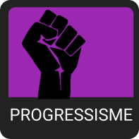
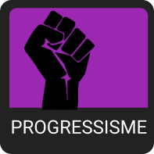
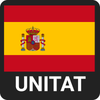
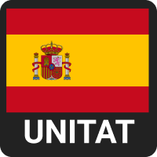
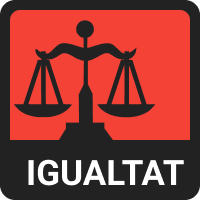
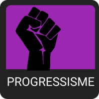
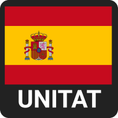

 

| economia | societat | tipus d'estat | |
|---|---|---|---|
|

|
|

|

|
Aquest test és part d'un treball de recerca de 1r de batxillerat.
Consisteix en dividir les ideologies polítiques en 4 eixos independents,
en comptes d'un de sol que mesura "esquerra" i "dreta". Amb això
s'aconsegueix uns resultats més precisos, que, tot i no ser perfectes,
ajuden a comprendre millor la política.
Hi ha preguntes al test.
Hi ha quatre eixos, cadascún amb dos valors oposats. El primer eix és d'economia, els dos següents són sobre la societat i l'últim és sobre el tipus d'estat català. Els vuit valors són aquests:
IGUALTAT
El valor "igualtat" representa la voluntat de repartir equitativament la riquesa al conjunt de la població. En el cas de Catalunya, amb bastants sectors públics com la sanitat o la educació, aquesta postura apostaria per més regulació de l'economia o la nacionalització d'empreses privades a nivells més alts. A l'extrem hi trobariem la voluntat de col·lectivitzar els mitjans de producció.
ECONOMIC
MERCAT LLIURE
El valor "mercat lliure" vol basar l'economia en la desregularització. En un context com el de Catalunya, amb una socialdemocràcia, s'apostaria per la privatització d'alguns sectors, una major facilitat per a la creació de noves empreses o la eliminació de l'Impost sobre Successions i Donacions. A l'extrem hi trobariem la privatització per complet de la sanitat i l'educació i un sistema basat en el capitalsime més lliberal.
LLIBERTAT PERSONAL
Those with higher Liberty scores believe in strong civil liberties. They tend to support democracy and oppose state intervention in personal lives. Note that this refers to civil liberties, not economic liberties.
CIVIL
PODER DE L'ESTAT
Those with higher Authority scores believe in strong state power. They tend to support state intervention in personal lives, government surveillance, and at high values, censorship or autocracy.
TRADICIÓ
Those with higher Tradition scores believe in traditional values and strict adherence to a moral code. Though not always, they are usually religious, and support the status quo or the status quo ante.
SOCIETY
PROGRESSISME
Those with higher Progress scores believe in social change and rationality. Though not always, they are usually secular or atheist, and support environmental action and scientific or technological research.
INDEPENDÈNCIA
Those with higher Nation scores are patriotic and nationalist. They often believe in an aggressive foreign policy, valuing the military, strength, sovereignty, and at high values, territorial expansion.
UNITAT
UNITAT
Those with higher Globe scores are cosmopolitan and globalist. They often believe in a peaceful foreign policy, emphasizing diplomacy, cooperation, integration, and at high values, a world government.